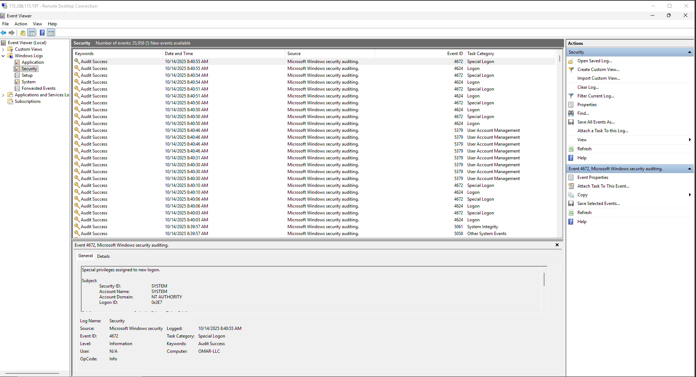
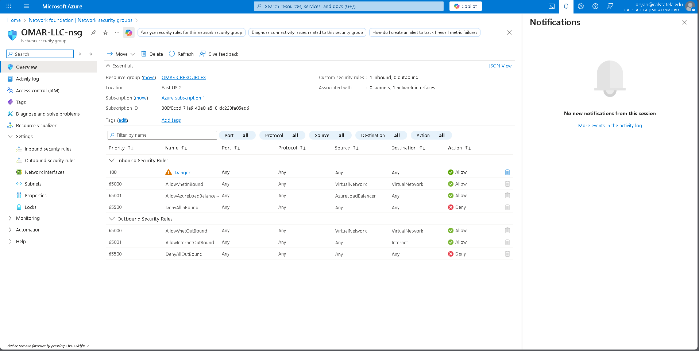
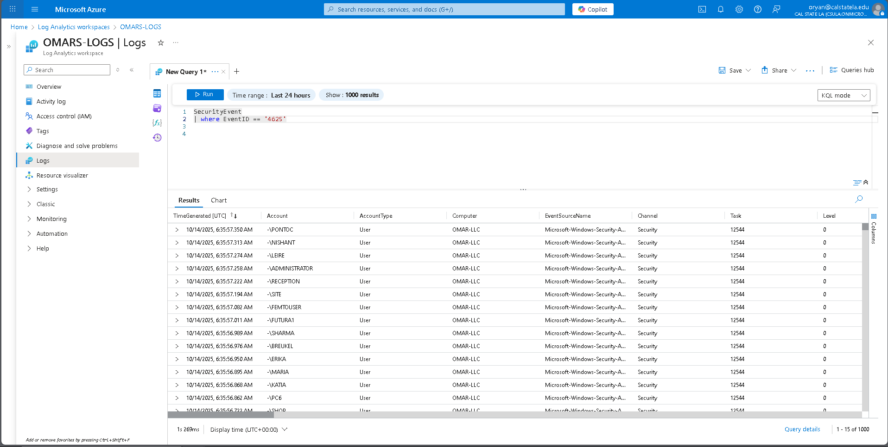
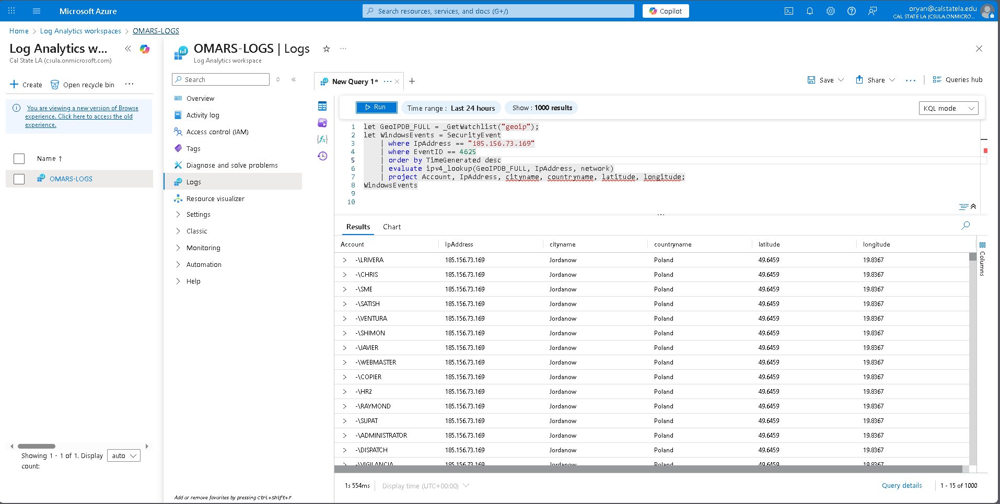
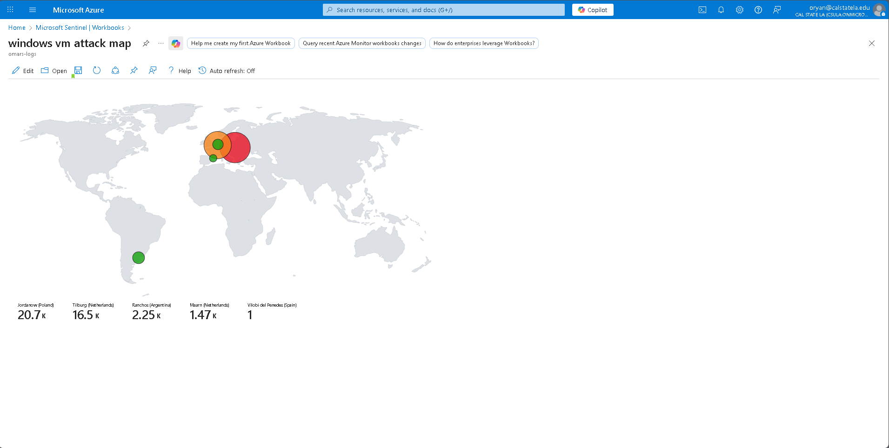

An intentionally exposed Windows 10 VM in Azure, used to capture real internet-borne brute-force RDP attempts, then analyzed end-to-end with Microsoft Sentinel: KQL queries, GeoIP enrichment, and a workbook mapping where the traffic actually came from.
The VM was deliberately weakened to attract real attack traffic rather than simulate it:
Querying SecurityEvent | where EventID == '4625' (Windows' failed-logon event) surfaced brute-force RDP attempts from across the open internet within hours of the VM going live. The GeoIP-enriched workbook mapped them by volume:
| Origin | Attempts |
|---|---|
| Jordanów, Poland | 20,700 |
| Tilburg, Netherlands | 16,500 |
| Ranchos, Argentina | 2,250 |
| Maarn, Netherlands | 1,470 |
| Vilobí del Penedès, Spain | 1 |




